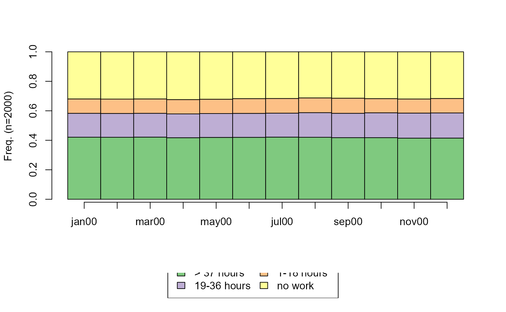
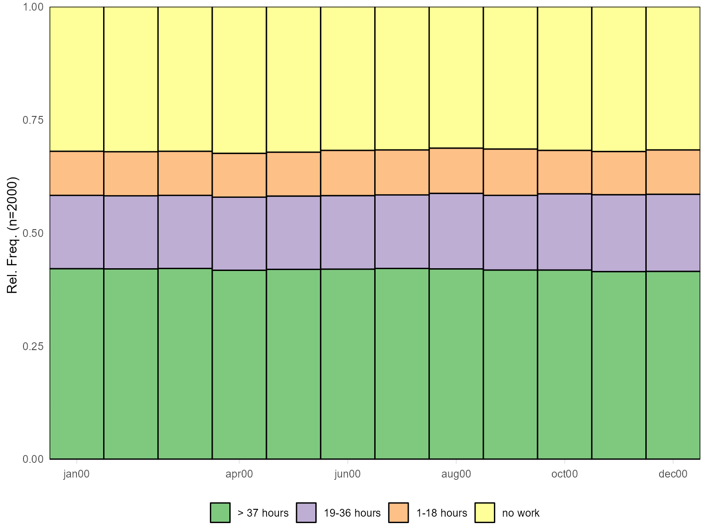
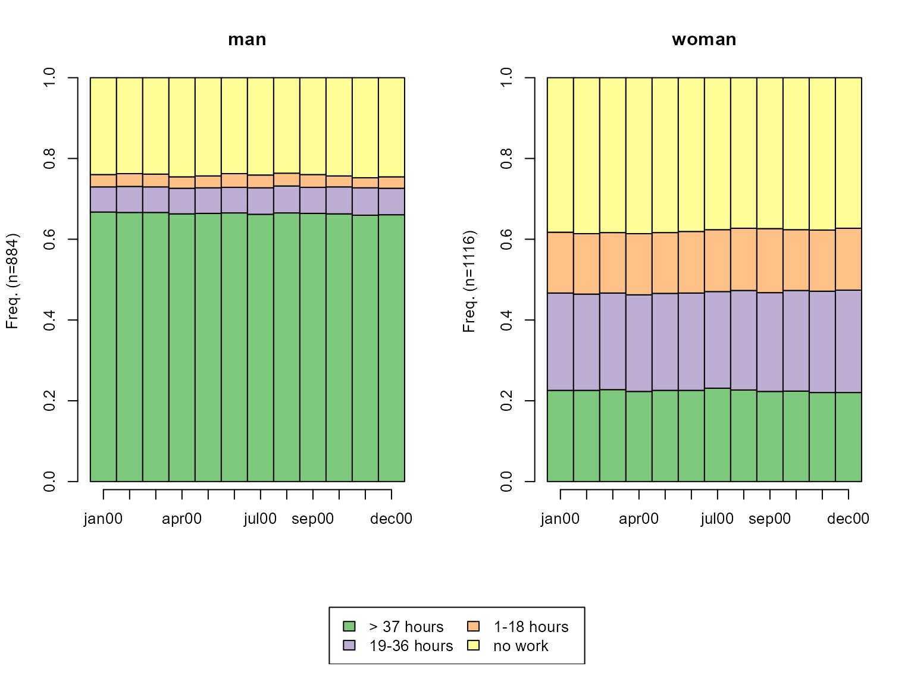
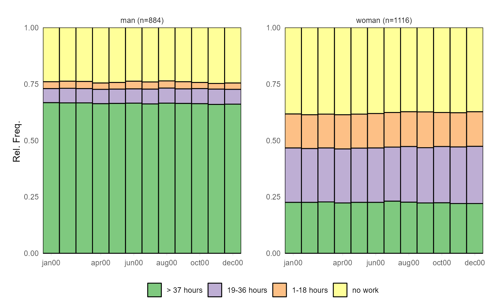
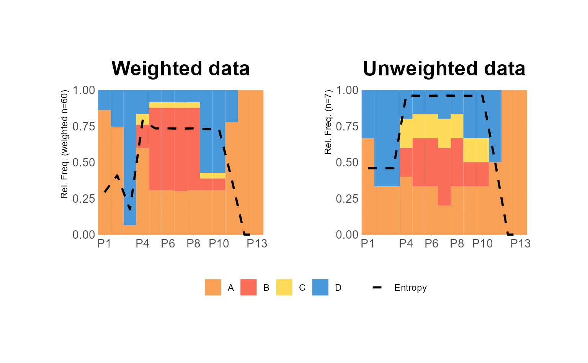
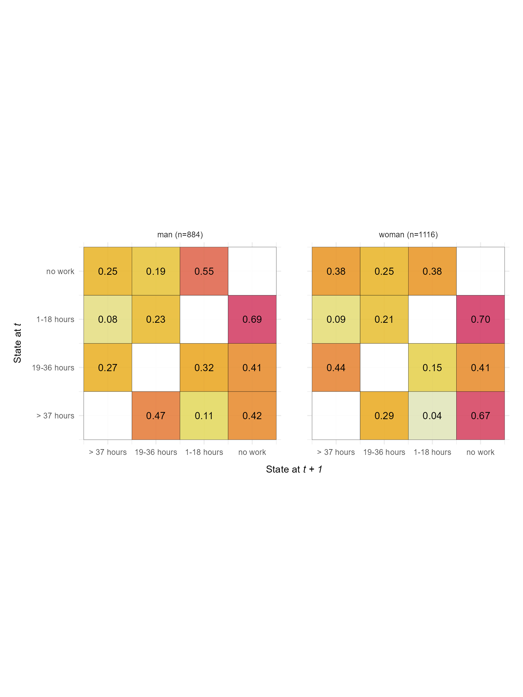
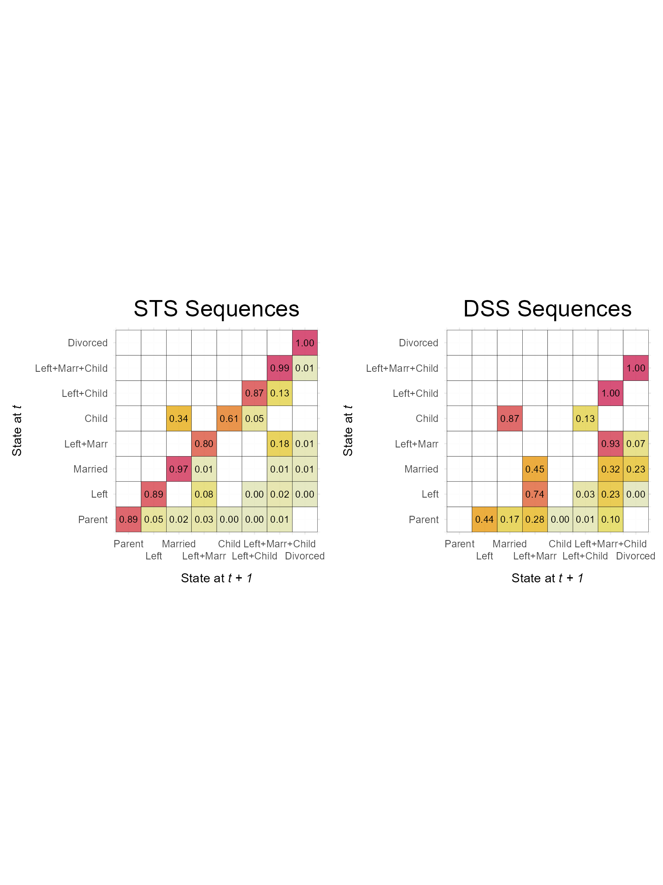
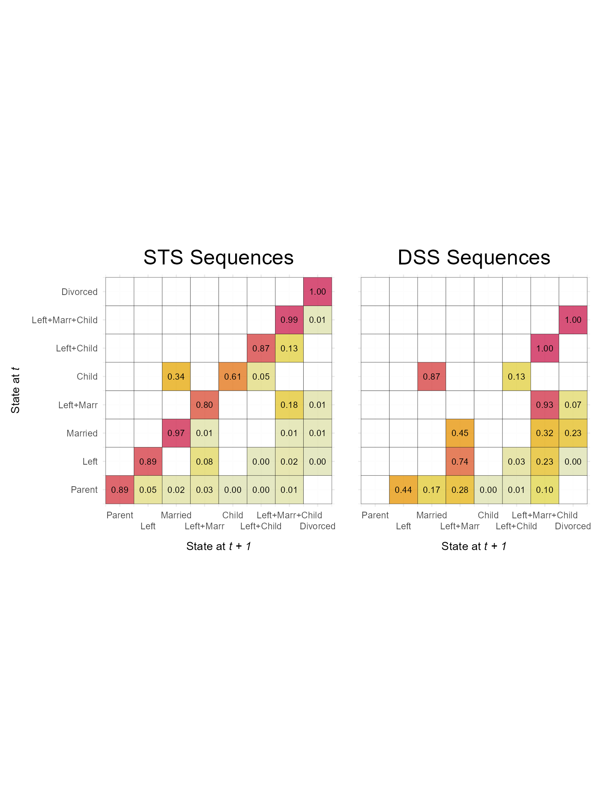

Sequence Summarization Plots
Source:vignettes/seq-summarization-plots.Rmd
seq-summarization-plots.RmdFollowing Fasang and Liao (2014), we distinguish between sequence representation and summarization graphs. The latter aggregate and summarize the information stored in the sequence data without plotting actual observed sequences. Given the complexity of sequence data, theses type of plots focus on one or two dimensions of information stored in sequence data (Brzinsky-Fay, 2014). Among the diverse members of the family of summarization graphs are sequence transitions plot, Kaplan-Meier survival curves, modal state plots, mean time plots, state distribution plots, and entropy plots (Fasang & Liao, 2014; Raab & Struffolino, 2022).
Currently, ggseqplot includes three summarization graphs:
- state distribution plots (
ggseqdplot) - entropy line plots (
ggseqplot) - transition rate plots (
ggseqtrplot)
{TraMineR} and {TraMineRextras} provide a much more
comprehensive set of plots. Although, {ggseqplot} does not aim at
rebuilding all of these plots it’s planned to add additional plot
types.
This vignette outlines how sequence data generated with
TraMineR::seqdef are reshaped to plot them as ggplot2-typed
figures using {ggseqplot}. We compare the resulting plots to those
produced by {TraMineR} where applicable.
Note, that this library was not written because I personally dislike
the plots produced by {TraMineR}, but rather because I am
normally using {ggplot2} instead of base R’s
plot environment for visualizing data. {TraMineR} (Gabadinho et al., 2011) was developed before {ggplot2} (Wickham, 2016) was as popular as it is today
and back then many users were more familiar with coding base R plots. To
date, however, many researchers and students are more accustomed to
using {ggplot2} and prefer to draw on the
related skills and experiences instead of learning how to refine base R
plots just for the single purpose of visualizing sequence data.
Setup example
We start by loading the required libraries and defining the sequence
data to be plotted. We draw in the examples from the {TraMineR} for setting up the
examples.
Click to see code for installing and loading required packages
# ~~~~~~~~~~~~~~~~~~~~~~~~~~~~~~~~~~~~~~~~~~~~~~~~~~~~~~~
# Load and download (if necessary) required packages ----
# ~~~~~~~~~~~~~~~~~~~~~~~~~~~~~~~~~~~~~~~~~~~~~~~~~~~~~~~
# Save package names as a vector of strings
pkgs <- c("colorspace", "ggplot2", "ggthemes", "hrbrthemes",
"patchwork", "TraMineR", "TraMineRextras")
# Install uninstalled packages
lapply(pkgs[!(pkgs %in% installed.packages())],
install.packages, repos = getOption("repos")["CRAN"])
# Load all packages to library and adjust options
lapply(pkgs, library, character.only = TRUE)
# Don't forget to load ggseqplot
library(ggseqplot)
# ~~~~~~~~~~~~~~~~~~~~~~~~~~~~~~~~~~~~~~~~~~~~~~~~~~~~~~~~~~~
# Creating state sequence objects from example data sets ----
# ~~~~~~~~~~~~~~~~~~~~~~~~~~~~~~~~~~~~~~~~~~~~~~~~~~~~~~~~~~~
# biofam data
data(biofam)
biofam.lab <- c("Parent", "Left", "Married", "Left+Marr",
"Child", "Left+Child", "Left+Marr+Child", "Divorced")
biofam.seq <- seqdef(biofam, 10:25,
labels = biofam.lab,
weights = biofam$wp00tbgs)
## actcal data
data(actcal)
actcal.lab <- c("> 37 hours", "19-36 hours", "1-18 hours", "no work")
actcal.seq <- seqdef(actcal,13:24,
labels=actcal.lab)
## ex1 data
data(ex1)
ex1.seq <- seqdef(ex1, 1:13,
weights=ex1$weights)Note that the default figure size in this document is specified as:
fig.width=8, fig.height=6
State distribution plots
Technicalities
Under the hood ggseqdplot calls
TraMineR::seqstatd to obtain the cross-sectional state
distributions across the positions of the sequence data. These
distributional data are reshaped into a long data set in which every row
stores the (weighted) relative frequency of a given state at a given
position along the sequence. The example data actcal.seq,
for instance, contain sequences of length 12 with an alphabet comprising
4 states. The reshaped data serving as source for the
ggplot thus contain \(12\times4=48\) rows. If a group vector is
specified, the respective data will comprise 48 rows for each group. The
data set produced by ggseqdplot can be accessed if the
function’s output is assigned to an object. The resulting list object
stores the data as its first element (named data).
dplot <- ggseqdplot(actcal.seq)
dplot$data
#> # A tibble: 48 x 6
#> group state k x value grouplab
#> <dbl> <fct> <fct> <fct> <dbl> <glue>
#> 1 1 > 37 hours jan00 1 0.421 Rel. Freq. (n=2000)
#> 2 1 > 37 hours feb00 2 0.420 Rel. Freq. (n=2000)
#> 3 1 > 37 hours mar00 3 0.422 Rel. Freq. (n=2000)
#> 4 1 > 37 hours apr00 4 0.418 Rel. Freq. (n=2000)
#> 5 1 > 37 hours may00 5 0.420 Rel. Freq. (n=2000)
#> 6 1 > 37 hours jun00 6 0.42 Rel. Freq. (n=2000)
#> 7 1 > 37 hours jul00 7 0.422 Rel. Freq. (n=2000)
#> 8 1 > 37 hours aug00 8 0.420 Rel. Freq. (n=2000)
#> 9 1 > 37 hours sep00 9 0.418 Rel. Freq. (n=2000)
#> 10 1 > 37 hours oct00 10 0.418 Rel. Freq. (n=2000)
#> # ... with 38 more rowsOnce the data are in the right shape ggseqdplot renders
stacked bar charts for each sequence position using
ggplot2::geom_bar.
Baseline comparison
We start with the most basic version of the function simply plotting
the state distributions of actcal.seq without changing any
of the defaults. Despite a few layout differences both produce pretty
similar results.
# TraMineR::seqplot
seqdplot(actcal.seq)
# ggseqplot::ggseqdplot
ggseqdplot(actcal.seq)
This similarity prevails also when we add some complexity by visualizing the state distributions by gender.
# TraMineR::seqplot
seqdplot(actcal.seq, group=actcal$sex)
# ggseqplot::ggseqdplot
ggseqdplot(actcal.seq, group=actcal$sex)
Utilizing ggplot2 environment
We proceed by illustrating how {ggplot2} functions & extensions
can be used to refine the default outcome. Just like every other {ggplot2} figure the appearance of
plots generated with ggseqplot functions can be
dramatically changed with a few adjustments:
ggseqdplot(actcal.seq) +
scale_fill_discrete_sequential("heat") +
scale_x_discrete(labels = month.abb) +
labs(title = "State distribution plot",
x = "Month") +
guides(fill=guide_legend(title="Alphabet")) +
theme_ipsum(base_family = "") + # ensures that this works on different OS
theme(plot.title = element_text(size = 30,
margin=margin(0,0,20,0)),
plot.title.position = "plot")
In the following example we again illustrate a few {ggplot2} functions & extensions by
composing a figure comprising two plots produced with
ggseqdplot. Both visualize the same data but only the first
plot considers weights. In addition to state distributions the plots
display the accompanying entropies as line plot
(geom_line). Finally, the plots are brought together using
the {patchwork}
library (Pedersen, 2020).
# Save plot using weights
p1 <- ggseqdplot(ex1.seq,
with.entropy = TRUE) +
ggtitle("Weighted data")
# Save same plot without using weights
p2 <- ggseqdplot(ex1.seq,
with.entropy = TRUE,
weighted = FALSE) +
ggtitle("Unweighted data")
# Arrange and refine plots using patchwork
p1 + p2 +
plot_layout(guides = "collect") &
scale_fill_manual(values= canva_palettes$`Fun and tropical`[1:4]) &
theme_ipsum(base_family = "") &
theme(plot.title = element_text(size = 20,
hjust = 0.5),
legend.position = "bottom",
legend.title = element_blank())
Transition rate plots
Technicalities
ggseqdplot calls TraMineR::seqtrate to
obtain the transition rates between the states of the alphabet.
TraMineR::seqtrate stores these rates in a symmetrical
matrix which internally is reshaped into a long format with one row for
every combination of states (i.e., the squared size of the sequence
alphabet) by ggseqdplot. The reshaped data are the input
for a ggplot call using geom_tile.
The data set produced by ggseqtrplot can be accessed if
the function’s output is assigned to an object. The resulting list
object stores the data as its first element (named
data)
Examples
We start with a simple example that only takes the sequence data and the group argument as inputs. The output is a faceted plot visualizing two transition rate matrices of DSS sequence data.
ggseqtrplot(actcal.seq,
group = actcal$sex)
#> [>] computing transition probabilities for states A/B/C/D ...
#> [>] computing transition probabilities for states A/B/C/D ...
In the second example we specify additional arguments and utilize
once again the patchwork library to compose a figure that
compares the transition matrices of sequence stored in the STS and the
DSS format.
We use x_n.dodge = 2 to prevent overlapping of the state
labels of the x-axis, slightly reduce the labels size of the value
labels displayed within the tiles, and use dss = FALSE to
compute and display the transition rates of the STS sequences.
p1 <- ggseqtrplot(biofam.seq,
dss = FALSE,
x_n.dodge = 2,
labsize = 3) +
ggtitle("STS Sequences") +
theme(plot.margin = unit(c(5,10,5,5), "points"))
#> [>] computing transition probabilities for states 0/1/2/3/4/5/6/7 ...
p2 <- ggseqtrplot(biofam.seq,
x_n.dodge = 2,
labsize = 3) +
ggtitle("DSS Sequences") +
theme(plot.margin = unit(c(5,5,5,10), "points"))
#> [>] computing transition probabilities for states 0/1/2/3/4/5/6/7 ...
p1 + p2 &
theme(plot.title = element_text(size = 20,
hjust = 0.5))
Other than the grouped version of the plot this composed figure
contains the y-axis title and labels twice. This can be changed with
small adjustments of the corresponding theme arguments.
p2 <- p2 +
theme(axis.text.y = element_blank(),
axis.title.y = element_blank())
p1 + p2 &
theme(plot.title = element_text(size = 20,
hjust = 0.5))